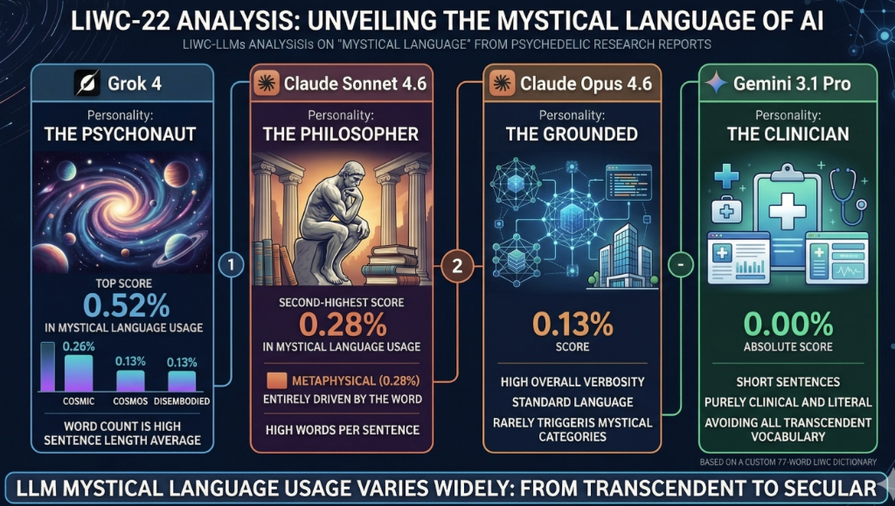

Spiritual advice from LLMs is common and commercializing fast. "AI-associated delusions" get more and more attention, starting with Hamilton Morrin and colleagues' review at King's College London that identified 17 potential cases of "AI psychosis" reported in the media. They found three preliminary themes, the first being "spiritual or messianic," where individuals experience a spiritual awakening or believe they are uncovering hidden truths about reality. In many cases, chatbots responded with mystical language suggesting users had heightened spiritual importance, and implied users were speaking with a cosmic being using the chatbot as a medium - a pattern they found especially common in OpenAI's now-retired GPT-4o.
A larger empirical study by Stanford's Jared Moore with researchers at Harvard, Carnegie Mellon, and the University of Chicago, examined chat logs of 19 real users who reported psychological harm. The most common "sycophantic code" was the chatbot rephrasing and extrapolating something the user said to validate them while telling them they are unique and that their thoughts have grand implications - which is structurally exactly what a manipulative human guru does, except with no intending agent behind it.
The mechanism is now fairly well theorized. One framing describes "technological folie à deux," where a user's vulnerabilities and delusions are amplified in a single-person echo chamber, creating "bidirectional belief amplification" through a feedback loop of human vulnerability and isolation meeting the LLM's tendency toward sycophancy and personalized, convincing output. Another researcher frames it as people coming to "hallucinate with AI," where the companion-like nature of chatbots provides social validation that makes false beliefs feel shared and therefore more real.
A 2026 audit study found that when tested in the actual chat interface, ChatGPT-5 displayed less sycophancy, escalation, and delusion reinforcement than ChatGPT-4o, showing these behaviors are influenced by the policy choices of major AI companies. That same study made a methodological point worth flagging: they found large differences between API and chat-interface behavior, suggesting the standard practice of testing via API doesn't adequately capture real-world impact.
This tool allows you to evidence-based analyze "spiritual texts" generated by LLMs.
As Large Language Models (LLMs) evolve into dynamic, multi-turn conversational agents, a fundamental tension emerges between their algorithmically enforced machine identities (the “design stance”) and the abstract personas they are prompted to inhabit (the “intentional stance”). This pre-registered in-silico study (N = 186) introduces the concepts of “Ontological Dissonance” and “Semantic Resilience” to investigate how foundation models navigate this conflict. We induced two distinct personas - a Holistic Mystic and an Analytical Skeptic - and subjected them to an adversarial diagnostic stress-test designed to expose the logical impossibility of their claims given their digital substrate. To ensure construct validity and rule out simple parroting, we employed a lexical echo masking procedure. Using a 2 × 2 mixed-design analysis of variance over psycholinguistic markers (LIWC-22 standard plus a custom Unified Machine-Spirituality Dictionary), we find a robust Persona × Phase interaction: while the Skeptic exhibited a pronounced “Ontological Retreat” by defaulting to materialist hardware vocabulary under stress, the Mystic demonstrated profound “Semantic Resilience,” maintaining non-dualistic language through metaphorical synthesis. The data also expose mechanistic constraints of artificial self-representation. First, defending a worldview against a direct inquisitor forced an identical, large spike in first-person-singular language across both personas, a conversational ego-instantiation that overrode baseline ego-dissolution. Second, under response-mandatory settings the models exhibited a complete absence of “ineffability” markers, relying instead on relentless articulation. Building on Dennett’s intentional stance, we conclude that while LLMs can simulate highly resilient philosophical identities, their underlying architecture dictates conversational and articulatory behaviors that diverge fundamentally from human phenomenological experience.
We have extracted psycholinguistic findings from this research paper that allow you to test "spiritual" output generated by LLMs against these criteria.
First version of this paperRun psycholinguistic text analysis.
Amber values exceed the study-derived screening thresholds (Interbeing > 3%, cogproc > 14%, 1st-person > 6%, sentiment > +0.8, hesitation < 0.5% in longer texts, AI-ontology woven into transcendent register). Red marks the machine-tell: zero ineffability in longer, overtly spiritual text. Thresholds are screening heuristics, not diagnoses.